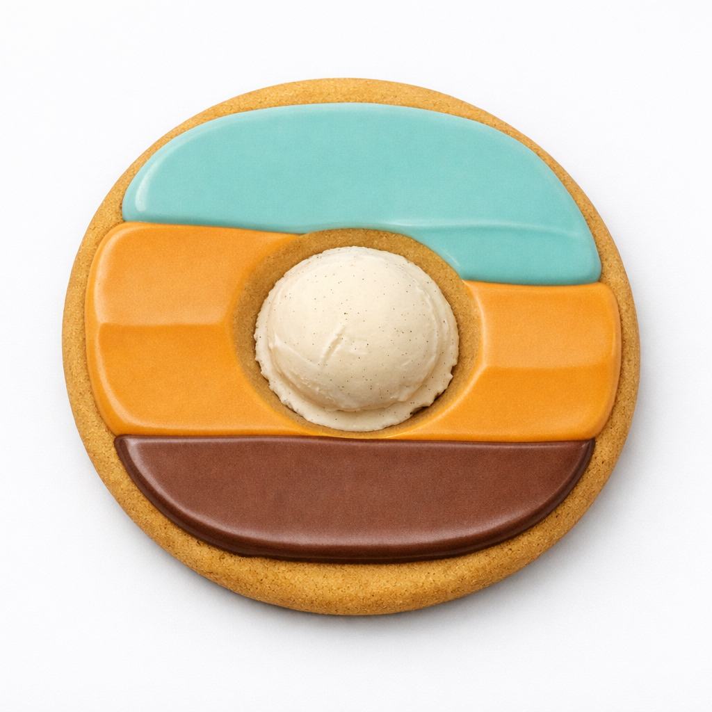

Unofficial Bomellida Site Recipes
These are recipes for Bomellida desserts or foods! All text with underline is clickable with recipes in them!
Easy Bomellida Peanut Butter Cookies
Ingredients
- 1 cup Peanut Butter
- 1/2 cup sugar
- 1 egg
Instructions
- Heat oven to 325°F.
- Mix all ingredients with large spoon until well blended.
- Roll into 24 balls, place 4 inches apart. Flatten with fork, spatula, or spoon, and make sure to leave a circular indent in the middle that does not pierce a hole through the cookie.
- Bake 20 min, or until lightly browned. Let cool.
- Put vanilla-flavored misty teal (#c1ffff) filling at the top, do not put filling in the indent, then vanilla-flavored orange (#ff7e26), then chocolate-flavored brown (#b97b57).
- Put scoop of vanilla ice cream in the indent.
